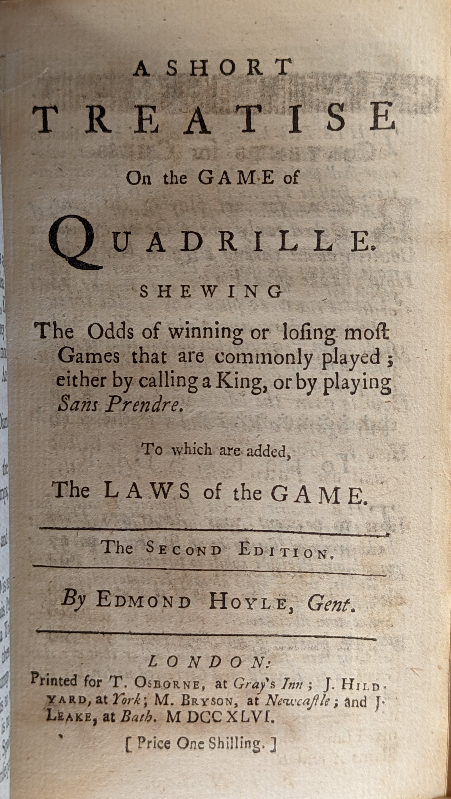

A Descriptive Bibliography of Edmond Hoyle
Copyright © 2014-26 by David Levy
(page updated 2024-11-04)User Guide
Quadrille.2
A Short Treatise on the Game of Quadrille, printed for T. Osborne et al, second London edition, 1746.
 |
Title: | A SHORT | TREATISE | On the GAME of | Quadrille. | SHEWING | The Odds of winning or loſing moſt | Games that are commonly played; | either by calling a King, or by playing | Sans Prendre. | To which are added, | The LAWS of the GAME. | [rule] | The Second Edition. | [rule] | By Edmond Hoyle, Gent. | [rule] | LONDON: | Printed for T. Osborne, at Gray's Inn; J. Hild-|yard, at York; M. Bryson, at Newcaſtle; and J. | Leake, at Bath. M DCC XLVI. | {Price One Shilling.} |
| Collation: | 12o: A–C6 [$½ signed; signing A2 as A, A3 as A2, A4 as A3]; 18 leaves, pp. [1–3] 4–36 |
| Contents: | Signature (Page) Reference | Contents | Signature (Page) Reference | Running Titles |
| A1r (1) | title | |||
| A1v (2) | advertisement. to the reader. autograph of Edmond Hoyle | |||
| A2r–C6v (3–36) | ‘[headpiece Spedding H13] | A Treatiſe on the Game of | QUADRILLE. | [...]’ | A2v–C6r (4–35) | ‘A ſhort Treatiſe on the | Game of Quadrille.’ | |
| on A3r (5), C3r (29) | ‘Game of Quadrille,’ | |||
| on A4r (7), B3r (17) | ‘Game of Quadrille’ | |||
| C6v (36) | ‘A ſhort Treatiſe, &c.’ |
| Publisher: | Thomas Osborne |
| Printer: | Thomas Gardner |
| Price: | 1s. (title) |
| References: | ESTC T87539, Jessel 783, Rather 27 |
| Copies Seen: | L [7917.de.65]; O [Jessel f.584]; Levy [1014]; Levy [2199] |
| Copies Seen in Collections: | L [7917.de.56(2)] (see Osborne.E); O [3843 f.10(3)] (see Osborne.E); O [Jessel f.545(2)] (see Osborne.C); O [Jessel f.548(2)] (see Osborne.E); CLU-C [*GV1277.H86 1746] (see Osborne.C); TNJ [GV1241.H6 1746] (see Osborne.C); TNJ [GV1241.H8 A6] (see Osborne.C); TNJ [GV1241.H8.A7] (see Osborne.E); TxU [GV1277.H89 1746] (see Osborne.C); Levy [1685] (see Osborne.C); Levy [1764] (see Osborne.C); Levy [1769] (see Osborne.E) |
| Other Copies: | IU [795.49 H85S1746] |
| Other Copies in Collections: | HAG [KW 973 L 6 [4]] (see Osborne.C); CtY-BR [NLp80 742he] (see Osborne.C); AuNU [RB 4646.45 at 4646.43] (see Osborne.C) |